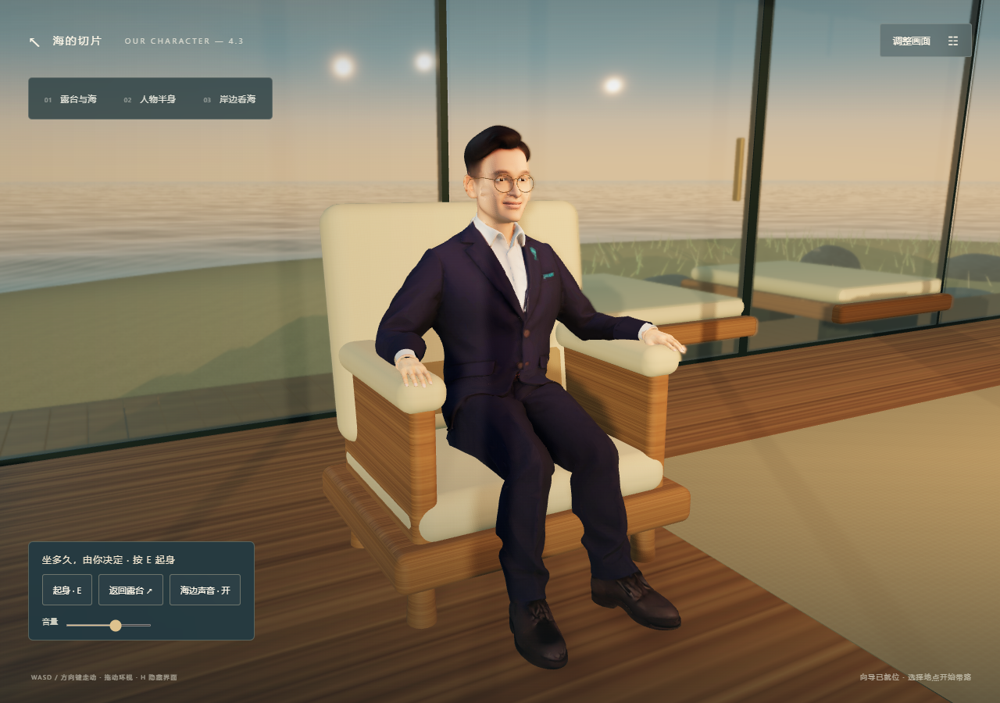

OUR UNDERSTANDING / THE CURRENT RESULT
4.3演示已保留 产品方向待定 · 暂不扩展
走进海的光影里，
回到看海的初衷。
最初想做的是一个海边场景，展示海上的风景。这里把我们讨论后的理解、已经做出的实际效果和仍待确定的事放在一起。
海是主体。玻璃屋提供观景位置，人物提供尺度与自主停留的体验。
演示固定于2026.11.15，本次汇总于2026.11.21。
本轮整理记录，未继续修改人物、海面或声音。

演示状态4.3固定保留
后续扩展暂不继续
产品方向待定，尚未验证
RESEARCH / DIRECTION AND VALUE
我们研究什么，留下什么
从参考条件到实际画面，
以可回看、可适配的积累为结果。
已做出的实际结果
对我们的价值
以后怎样继续使用这些积累
01 / WHAT WE AGREED
我们最终理解的主线
先看一幅观海画面是否成立，
再决定需要哪些环境和交互。
以上三个位置是观景目标；当前已有对应场景与路线，不表示构图或海面美术已经完成最终打磨。查看主线与画面判断依据 ↗
02 / THE ACTUAL WEB RESULT
当前能看到、能操作的效果
截图与视频来自4.3实际网页。
历史功能记录与最终视觉质量分开说明。
辅助能力实录：人物、沙发坐起与室内环境

CHARACTERS / THE ENTRIES WE KEPT
四个形象入口，直接看实际画面
固定4.3使用0597。
其他入口分别保留，能力不完全相同。
03 / WHAT REMAINS USEFUL
留下了什么，也有哪些边界
保留可回看的制作基础，
不把功能可用等同于全面完成。
运行版本、资产与制作依据
- 0597人物GLB与可编辑工程、原始与历史版本。
- 控制、脚底/台阶、指定坐姿、镜头与声画联动方法。
- 素材来源、对应源码、检查记录和实际录屏。
画面、通用性和产品仍需分别判断
- 海面、水光、反射与声学为实时近似，整体自然度没有最终验收。
- 当前0597仍有袖管、服装细节与动作感问题，尚无独立抓握、换装或自由对话；旧版向导三套换装另行保留。
- 4.3的最新坐姿/面部适配集中在0597与五处指定座位；项目保留其他人物入口，但各版本能力不同，未统一到4.3。
- 已检查桌面与390像素布局，尚未建立多设备性能与产品发布指标。
THE FIXED REFERENCE
4.3固定版，独立保留
固定目录保留当前运行资源，不用查询参数代替版本保存。
本次只读校验，不重建或覆盖固定目录。历史实录与可编辑工程继续在主项目留存。
04 / IDEAS KEPT FOR LATER
保留的扩展理解，尚未执行
围绕同一片海的光、风、潮与环境层次。
记录方向，暂不恢复开发。
次要回查：此前10项其他场景与活动草案
这些内容保留为思路档案，已从当前展示主线中收起，不作为制作优先级。
展开保留草案 ↗05 / THE OPEN PRODUCT QUESTION
产品价值还没有被证明
技术积累已留下，
用户是否需要它仍是另一件事。
当前决定暂时够用，产品方向待定。保留演示与记录，暂不继续扩展。
06 / ONE PLACE TO RETURN TO
从这里回到对应资料
主线、结果、技术细节和旁支构想分别保留。